건설기계설비산업기사 (2003-05-25 기출문제)
1과목: 기계제작법
1. 목형 제작에서 주물자(shrinkage scale)를 사용하는 이유는?
- 주형을 만들 때 흙이 줄기 때문에
- 쇳물이 굳을 때 줄기 때문에
- 주형을 뽑을 때 움직이기 때문에
- 나무가 줄기 때문에
(정답률: 알수없음)

2. 단조종료 온도에 관한 설명으로 옳지 않은 것은?
- 단조온도가 낮으면(재결정온도 이하) 가공경화되어 내부에 변형이 남을 때가 있다.
- 재결정 온도이상에서는 경화되어도 재결정 현상으로 연화되므로 경화되지 않은 것과 같은 결과가 된다.
- 단조에 적합한 온도의 재결정 온도와 융점과의 사이에 있고 온도가 높을수록 변형저항이 작아 가공이 용이하다.
- 단조 종료온도가 높으면 결정이 미세화되고 기계적 성질이 좋아 열처리할 필요가 없다.
(정답률: 알수없음)
3. 구멍용 한계 게이지가 아닌 것은?
- 봉 게이지
- 평형 플러그 게이지
- 스냅 게이지
- 판 플러그 게이지
(정답률: 알수없음)
4. 정밀입자 가공에 해당하는 것은?
- 방전가공(EDM)
- 브로칭(boraching)
- 보링(boring)
- 액체 호닝(liquid honing)
(정답률: 알수없음)
5. 일반적으로 줄(file)의 종류를 단면형상에 따라 분류할 때 해당되지 않는 것은?
- 원형 줄
- I형 줄
- 반원형 줄
- 평형 줄
(정답률: 알수없음)
6. 단조작업에서 소재를 축방향으로 압축하여 길이를 짧게 하는 작업의 명칭은?
- 늘이기(drawing)
- 업세팅(upsetting)
- 넓히기(spreading)
- 단짓기(setting down)
(정답률: 알수없음)
7. 강재의 표면경화방법 중에서 암모니아 가스를 이용하는 것은?
- 화염 열처리
- 고주파 열처리
- 염욕로 침탄법
- 질화법
(정답률: 알수없음)
8. 열간단조(hot forging) 작업에 해당되는 것은?
- 업셋 단조(upset forging)
- 코울드 헤딩(cold heading)
- 코이닝(coining)
- 스웨이징(swaging)
(정답률: 알수없음)
9. 스크레이핑(scraping)작업에 사용되는 스크레이퍼의 종류 중 틀린 것은?
- 평 스크레이퍼 (flat scraper)
- 훅 스크레이퍼 (hook scraper)
- 칼날형 스크레이퍼
- 반원형 스크레이퍼
(정답률: 알수없음)
10. 구성인선의 발생을 억제하는데 효과가 있는 방법 중 틀린 것은?
- 절삭속도의 증대
- 절삭깊이의 감소
- 공구상면 경사각의 증대
- 칩 두께의 증가
(정답률: 알수없음)
11. 기계조립 작업시 작업순서를 열거하였다. 공구를 사용하는 순서가 맞는 것은?
- 줄 - 스크레이퍼 - 쇠톱 - 정
- 쇠톱 - 스크레이퍼 - 정 - 줄
- 줄 - 쇠톱 - 스크레이퍼 - 정
- 쇠톱 - 정 - 줄 - 스크레이퍼
(정답률: 알수없음)
12. 선반(lathe)과 유사한 구조의 용접기로 접합면에 압력을 가한 상태로 상대적인 회전을 시키는 압접방법은?
- 로울용접(roll welding)
- 확산용접(diffusion welding)
- 냉간압접(cold welding)
- 마찰용접(friction welding)
(정답률: 알수없음)
13. 플레이너(Planer)의 급속귀환 운동에 부적당한 기구는?
- 유압 기구
- 크랭크 장치
- 랙과 피니언
- 웜과 웜기어
(정답률: 알수없음)
14. 자전거에 쓰이는 프레임용 파이프를 제작하는 방법은?
- 경납땜(brazing)
- 맞대기 심 용접(butt seam welding)
- 레이저 빔 용접(laser beam welding)
- 테르밋 용접(thermit welding)
(정답률: 알수없음)
15. 전해연마의 장점이 아닌 것은?
- 절삭 또는 연삭된 표면의 조도를 높인다.
- 복잡한 면의 정밀가공이 가능하다.
- 가공에 의한 표면균열이 생기지 않는다.
- 전류밀도가 클수록 표면이 깨끗하다.
(정답률: 알수없음)
16. 소성가공에서 냉간가공과 열간가공을 구분하는 것은?
- 변태온도
- 단조온도
- 담금질온도
- 재결정온도
(정답률: 알수없음)
17. 파텐팅(patenting) 열처리를 옳게 나타낸 것은?
- 냉간 가공전에 시행하는 항온 변태 처리이다.
- 냉간 가공후에 시행하는 계단 담금질이다.
- 펄라이트 조직을 안정화 시키는 처리이다.
- 미세한 오스테나이트 조직을 주는 처리이다.
(정답률: 알수없음)
18. 주절삭력 150kgf, 절삭속도 50m/min 일때, 절삭마력은 몇 PS인가?
- 7.67
- 5.67
- 3.67
- 1.67
(정답률: 알수없음)
19. 주물사의 구비 조건으로 틀린 것은?
- 양호한 열전도성
- 성형성
- 내화성
- 통기성
(정답률: 알수없음)
20. 버니어 캘리퍼스(Vernier Calipers)의 어미자에 새겨진 0.5mm의 24눈금(12mm)으로 아들자를 25등분 할 때, 어미자와 아들자의 1눈금의 차는 얼마인가?
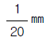
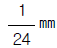
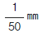
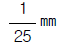
(정답률: 알수없음)
2과목: 재료역학
21. 다음 그림과 같은 외팔보에서 C점에 3kN의 집중하중이 작용할 때 B점의 처짐량은 몇 cm 인가? (단, 보의 관성모멘트 I=200cm4, 탄성계수 E=200GPa이다)
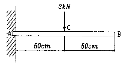
- 0.0078
- 0.078
- 0.78
- 7.8
(정답률: 알수없음)
22. 바깥지름 300mm의 풀리로서 동력을 전달시키고 있는 축이 있다. 축지름은 4cm이고 벨트의 유효장력이 1500 N일 때 축에 발생하는 최대 전단응력은 몇 MPa 인가?
- 22.5
- 12
- 25
- 17.9
(정답률: 알수없음)
23. 원형 단면의 단순보(simple beam)에서 최대 전단응력은 평균 전단응력의 몇 배인가?
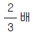
- 1배
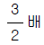
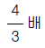
(정답률: 알수없음)
24. 다음의 응력변형률 선도에 관한 설명 중 틀린 것은?
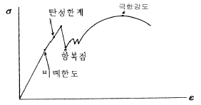
- 비례한도는 응력과 변형률이 비례관계를 가지는 마지막 최대응력이다.
- 탄성한계는 하중을 제거하면 변형량이 완전히 없어 졌다고 인정할 수 있는 점의 응력이다.
- 항복점은 응력이 탄성한도를 지나 커지다가 하중을 증가시키지 않아도 변형이 갑자기 커지는 점이다.
- 공칭응력은 극한강도점 이상의 영역에서 시편이 늘어남에 따라 줄어지는 실제 단면적으로 계산한 응력이다
(정답률: 알수없음)
25. 보(beam)의 최대처짐에 대한 설명 중 알맞은 것은?
- 하중 P에 반비례한다.
- 보의 길이 L의 제곱에 정비례한다
- 탄성계수 E에 정비례한다.
- 단면 2차 모멘트 I에 반비례한다.
(정답률: 알수없음)
26. 단면 2cm × 3cm, 길이 4m의 봉을 수직으로 매달았을 때 자중에 의한 신장량은 몇 cm 인가? (단, 비중량(γ) = 80 kN/m3, E = 210 GPa)
- 0.0003
- 0.0012
- 0.0015
- 0.0⑤
(정답률: 알수없음)
27. 그림과 같은 단순보에서 등분포 하중 ω가 작용하여 최대굽힘응력이 5 MPa가 되었다. 단면은 폭(b)=6cm, 높이(h)=15cm 인 사각단면일 때 분포하중 ω는 몇 N/m 인가?
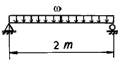
- 950
- 1250
- 2250
- 4250
(정답률: 알수없음)
28. 지름이 16㎝, 길이 4.5m인 원형단면의 기둥의 세장비는?
- 100
- 112.5
- 200
- 225
(정답률: 알수없음)
29. 그림과 같은 보의 중앙점에서 굽힘 모멘트는?
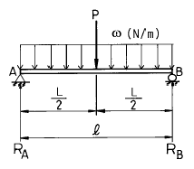
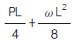
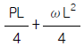
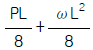
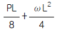
(정답률: 알수없음)
30. 2축응력에서 σx=-σy=0.14 GPa이고 그 재료의 전단탄성계수 G=82 GPa일 때 순수전단 상태에서의 전단변형률 γ는 얼마인가?
- 0.7×10-3
- 1.7×10-3
- 2.7×10-3
- 3.7×10-3
(정답률: 알수없음)
31. 그림과 같은 직사각형 단면의 외팔보에 발생하는 최대굽힘응력 σmax는 얼마인가?
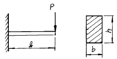
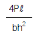
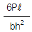
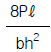
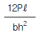
(정답률: 알수없음)
32. 지름이 40mm인 원형중실축에 비틀림모멘트 500 N.m 가 작용하고 있을 때 비틀림 응력은 몇 MPa 인가?
- 7.96
- 79.6
- 3.98
- 39.8
(정답률: 알수없음)
33. 밑변의 길이가 b이고, 높이가 h인 3각형 단면의 도심을 지나는 x축에 대한 단면 2차모멘트의 값은?
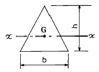
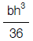
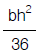
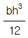
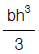
(정답률: 알수없음)
34. 다음과 같은 기둥의 임계 하중(Pcr)을 구하면 몇 N인가? (단, 기둥의 길이 L = 1m, 탄성계수 E = 210GPa, 최소단면2차모멘트 I = 0.1m4 이다.)
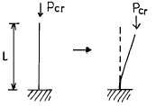
- 2.07 × 1011
- 3.18 × 1012
- 8.29 × 1011
- 5.18 × 1010
(정답률: 알수없음)
35. 폭 70mm, 두께 12mm인 강판의 중앙에 지름 19mm의 구멍이 가공되어 있다. 인장하중 15kN이 작용한다면 응력집중에 의한 최대응력은 얼마인가? (단, 응력 집중계수 K=2.4이다.)
- 29.4 Pa
- 58.8 Pa
- 29.4 MPa
- 58.8 MPa
(정답률: 알수없음)
36. 그림과 같은 단붙임 원형봉에서 d1:d2 = 5:3 일때 각단에 발생하는 응력 비 σ1/σ2는 얼마인가?
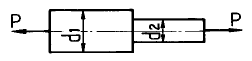
- 16/25
- 9/16
- 9/25
- 15/27
(정답률: 알수없음)
37. 길이가 L인 외팔보의 자유단에 집중하중 P가 작용하였을 때 최대 굽힘모멘트는?
- PL
- PL/2
- PL/4
- PL/6
(정답률: 알수없음)
38. 그림과 같이 길이 1m인 단순보가 중앙에 100N.m의 모멘트를 받고 있을 때 지점반력 RA와 RB는 몇 N 인가?
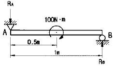
- RA=50, RB=50
- RA=100, RB=50
- RA=50, RB=100
- RA=100, RB=100
(정답률: 알수없음)
39. 그림과 같은 도형에서 밑변에서 도심까지의 거리 C는 몇 cm 인가?
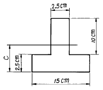
- 9.875
- 5
- 6.15
- 3.75
(정답률: 알수없음)
40. 연강의 탄성계수 E=210 GPa, 포와송비 0.3일 때 전단탄성계수 G는 몇 GPa 인가?
- 81
- 141
- 271
- 321
(정답률: 알수없음)
3과목: 기계설계 및 기계재료
41. 다음 중 기계구조용 재료로 가장 많이 사용되는 2원합금 재료는 무엇인가?
- 알루미늄합금
- 고속도강
- 스테인리스강
- 탄소강
(정답률: 알수없음)
42. 볼베어링의 수명은?
- 하중의 3배에 비례한다.
- 하중의 3승에 비례한다.
- 하중의 3배에 반비례한다.
- 하중의 3승에 반비례한다.
(정답률: 알수없음)
43. 다음 앵글 밸브(angle valve)의 기능에 대한 설명중 틀린 것은?
- 유체의 유량 조절
- 유체의 방향 전환
- 유체의 흐름의 단속
- 유체의 에너지 유지
(정답률: 알수없음)
44. 아연(Zn)의 설명이 잘못된 것은?
- 대기 중 표면에 염기성 탄산염(炭酸鹽)의 박막이 생겨 내부를 보호한다.
- 도금 및 합금으로도 많이 사용한다.
- 매우 단단한 금속으로 금형재로 사용된다.
- 4%의 Al을 합금하면 다이캐스팅용으로 유명한 자막(Zamak)이 된다.
(정답률: 알수없음)
45. 이원합금(二元合金)에서 공정반응을 일으킬 때의 자유도는?
- 0
- 1
- 2
- 3
(정답률: 알수없음)
46. 용선중에 포함된 불순물들을 산화 제거하여 강의 제조에 사용되는 로는?
- 용광로
- 용선로
- LD전로
- 변성로
(정답률: 알수없음)
47. 고탄소 크롬강으로 열처리성과 내충격성이 높은 강은?
- STD1
- STC3
- SKH51
- SM15C
(정답률: 알수없음)
48. 리베팅 후의 리벳지름 또는 구멍의 지름 d[㎜], 리벳의 전단응력 τ [㎏f/㎜2], 리벳 또는 강판의 압축응력 σc [㎏f/㎜2] 인 겹치기 리벳이음에서 전단저항과 압축저항을 같도록 하면 강판의 두께 t[㎜] 를 구하는 식으로 옳은 것은? (단, 리벳의 길이 방향에 직각 방향으로 인장력 W[㎏f]이 작용한다.)
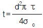
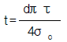
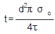
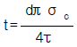
(정답률: 알수없음)
49. 롤러체인의 연결에서 링크의 수가 홀수일 때 사용하는 것은?
- 오프셋 링크
- 롤러 링크
- 부시
- 핀 링크
(정답률: 알수없음)
50. Martensite의 경도에 크게 기여하는 요인이 아닌 것은?
- 탄소원자의 석출
- 결정의 미세화
- 급냉으로 인한 내부응력
- 탄소원자에 의한 Fe격자의 강화
(정답률: 알수없음)
51. 베어링 계열이 60인 단열 깊은 홈 베어링의 호칭번호가 6⑤ 일 때 베어링의 안지름은 얼마인가?
- 5mm
- 10mm
- 15mm
- 25mm
(정답률: 알수없음)
52. 특수 청동합금에 유동성을 좋게 하기 위해 첨가하는 원소는?
- 규소
- 망간
- 인
- 아연
(정답률: 알수없음)
53. 단판(單板)원판 마찰 클러치에 축추력(軸推力) P=60(㎏f)가 작용할 때 전달할 수 있는 토오크 T(㎏f-mm)은 얼마인가? (단, 원판마찰 클러치의 바깥 반지름 r1=120(mm) 안쪽 반지름 r2=80(㎜),마찰면의 마찰계수 μ =0.1 이다.)
- 1200
- 600
- 720
- 480
(정답률: 알수없음)
54. 고온에서 다른 재료에 비해 강도가 우수하기 때문에 항공기 외판 등에 사용하는 재료는?
- Ni
- Cr
- W
- Ti
(정답률: 알수없음)
55. 특수원소를 탄소강에 첨가할 경우 담금성 향상 효과가 큰 것부터 배열된 항은?
- Cr, Mn, Cu, Ni
- Ni, Cu, Cr, Mn
- Mn, Cr, Ni, Cu
- Ni, Mn, Cr, Cu
(정답률: 알수없음)
56. 원통커플링에서 원통을 졸라매는 힘을 P라 하면 이 마찰커플링의 전달 토크는? (단, μ 마찰계수, 축의 지름을 d, 커플링의 길이를 L로 한다.)
- T = μ π Pd
- T = 2μ Pd
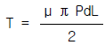
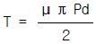
(정답률: 알수없음)
57. 웜기어에서 웜을 구동축으로 할때 웜의 줄수를 3, 웜 휘일의 잇수를 60 이라고 하면 피동축인 웜휘일을 몇 분의 1로 감속하는가?
- 1/15
- 1/20
- 1/25
- 1/180
(정답률: 알수없음)
58. 지름 60㎜의 강축을 사용하여 250rpm으로 54㎰을 전달하는 묻힘키이(sunk key)의 길이는 다음중 어느 것인가? (단, 키이의 허용전단응력 τ = 4.6㎏f/㎜2, 키이의 규격(폭 x 높이) b x h = 15㎜ × 12㎜이다.)
- 61.8㎜
- 74.7㎜
- 83.5㎜
- 93.4㎜
(정답률: 알수없음)
59. 스프링 상수 2 ㎏f/㎜의 코일을 만들어 8 ㎏f의 무게를 달았다. 코일 소선은 2㎜의 피아노 선이고 코일의 유효감김수 n = 8일때, 코일 스프링의 지름은 얼마인가? (단, G = 8 × 103 ㎏f/㎜2이다.)
- 4㎜
- 5㎜
- 10㎜
- 18㎜
(정답률: 알수없음)
60. 직경 10mm인 강구를 사용하여 시험편에 500kg의 정하중으로 30초간 눌렸을 때 생기는 영구변형 깊이가 0.5mm이라면 재료의 브리넬 경도는?
- 31.8 Kg/mm2
- 27.8 Kg/mm2
- 35.7 Kg/mm2
- 30.8 Kg/mm2
(정답률: 알수없음)
4과목: 유압기기 및 건설기계일반
61. 기어펌프의 특성 설명으로 틀린 것은?
- 흡입 능력이 가장 크다.
- 구조가 간단하고, 취급이 용이하다.
- 가변 용량형으로 만들기가 곤란하다.
- 피스톤 펌프에 비교하여 효율이 우수하다.
(정답률: 알수없음)
62. 특히 비행장이나 도로의 신설 등과 같은 대규모 정지 작업에도 적합하며, 보울(bowl)의 용량으로 그 규격을 표시하는 운반기계는?
- 파일 드라이버
- 스크레이퍼
- 백 호우
- 드래그 라인
(정답률: 알수없음)
63. 구조물의 기초 자리파기, U형 홈의 굴착 및 수중작업과 좁은 공간에서의 깊이파기와 호퍼작업에 쓰이는 셔블계 굴착기계의 작업장치는?
- 파일 드라이버
- 크레인
- 어드 드릴
- 클램셸
(정답률: 알수없음)
64. 체적 탄성계수가 2×108 kgf/㎝2인 유체의 체적을 2% 감축시키려면 몇 kgf/㎝2의 압력이 필요한가?
- 1×109
- 4×109
- 4×106
- 8×106
(정답률: 알수없음)
65. 다음 중 착암기계가 아닌 것은?
- 웨곤 드릴(wagon drill)
- 크롤러 드릴(crawler drill)
- 싱커(sinker)
- 어스 드릴(earth drill)
(정답률: 알수없음)
66. 다음 중에서 유압 작동유의 첨가제가 아닌 것은?
- 산화 촉진제
- 방청제
- 유성 향상제
- 점도지수 향상제
(정답률: 알수없음)
67. 모우터그레이더의 끝마무리 작업에서 블레이드의 절삭각도는 몇 도(°)정도가 적합한가?
- 180
- 150
- 120
- 90
(정답률: 알수없음)
68. 덤프트럭의 유니버어설 조인트 설치 목적은?
- 축의 소음, 진동방지
- 각을 이루는 두축간의 회전력 전달
- 축의 길이 변환
- 축의 축간거리 유지
(정답률: 알수없음)
69. 토출압이 40kgf/cm2, 토출량이 48ℓ/min, 회전수가 1200rpm 되는 용적형 펌프에 있어서 소요동력이 3.9kW이었다면 전체효율은 약 몇 ％ 인가?
- 60
- 70
- 80
- 90
(정답률: 알수없음)
70. 공기 타이어의 특성을 이용하여 노면을 다지는 기계로, 로우드 롤러에 비하여 기동성이 좋은 것은?
- 진동 콤팩터
- 래머와 탬퍼
- 진동 롤러
- 타이어 롤러
(정답률: 알수없음)
71. 다음 회로도는 유량 제어 밸브가 부착된 원격제어 불도저의 속도 제어 회로이다. 이 회로의 명칭은?
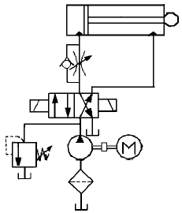
- 미터 인 회로(meter in circuit)
- 미터 아웃 회로(meter out circuit)
- 블리드 오프 회로(bleed off circuit)
- 감속 회로(deceleration circuit)
(정답률: 알수없음)
72. 피견인식 스크레이퍼의 구조에서, 볼(bowl)의 뒷면에 있으며, 볼(bowl)안에 있는 장치로서 흙을 밀어내기도 하고, 흙을 적재하도록 넓은 공간을 만들어 주는 일을 하는 것은?
- 에어프런(apron)
- 블레이드(blade)
- 이젝터(ejector)
- 케이블(cable)
(정답률: 알수없음)
73. 유압 계통의 압력이 설정 값에 도달하게 되면 작동유를 기름탱크로 귀환시켜 펌프를 무부하로 만들고 계통압력이 설정값 이하로 되면, 다시 유압계통에 작동유을 공급하는 밸브는?
- 교축 밸브
- 언로드 밸브
- 감압 밸브
- 시퀀스 밸브
(정답률: 알수없음)
74. 내경 50mm의 실린더에서 피스톤 속도가 4 m/min 일 때, 필요한 유압유의 이론 유량 Q 는 약 몇 ℓ /min 인가?
- 4.89
- 7.85
- 3.14
- 2.67
(정답률: 알수없음)
75. 버켓용량 2.0 m3, 버켓계수 1.0 , 작업효율 0.5, 토량환산계수 1 이고, 1회 사이클 시간이 50초인 파워셔블의 시간당 작업량은 몇 m3/hr 인가?
- 50
- 61.5
- 72
- 81.5
(정답률: 알수없음)
76. 다음 중 유압장치의 특징 설명으로 틀린 것은?
- 힘의 증폭이 용이하다.
- 사용 압력의 한계는 10 bar이다.
- 일정한 힘과 토크를 낼 수 있다.
- 제어가 비교적 간단하고 정확하다.
(정답률: 알수없음)
77. 지게차를 사용할 때 주의사항으로 틀린 것은?
- 급출발, 급정지, 급선회는 하지 않는다.
- 짐을 내릴 때에는 조용하고, 천천히 내린다.
- 작업후에는 주차 제동장치를 잠근다.
- 적하장치에 사람을 태우고 이동한다.
(정답률: 알수없음)
78. 유체의 흐름이 없을 때에도 일정 압력을 유지하는데 사용하는 유압 기기는?
- 오일 탱크
- 가변 용량 탱크
- 어큐뮬레이터
- 스트레이너
(정답률: 알수없음)
79. 아스팔트 믹싱 플랜트의 주요 장치에 해당되지 않는 것은?
- 골재 건조장치
- 배기 집진장치
- 골재 파쇄장치
- 아스팔트 공급장치
(정답률: 알수없음)
80. 그림과 같은 장치에서 A 피스톤에 400kgf의 힘을 가하였을 때, B 피스톤의 압력은 약 몇 kgf/cm2 인가? (단, A 피스톤의 지름은 10[cm] 이고, B 피스톤의 지름은 20[cm]이다.)
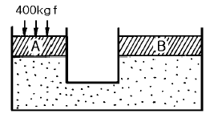
- 1.3
- 5.1
- 6.3
- 7.1
(정답률: 알수없음)